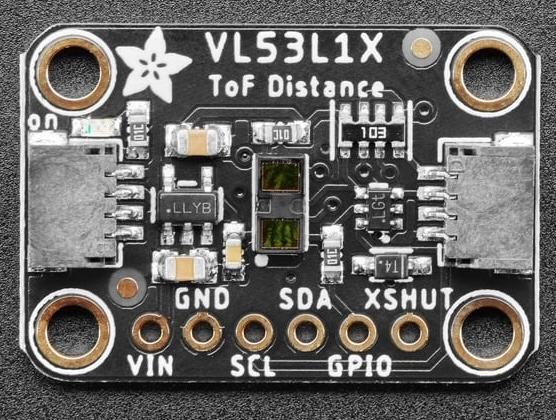
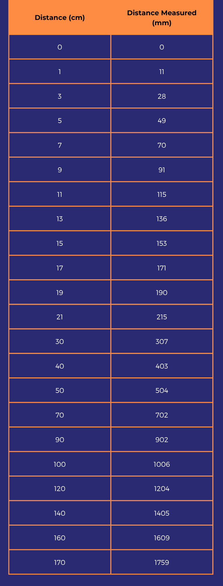
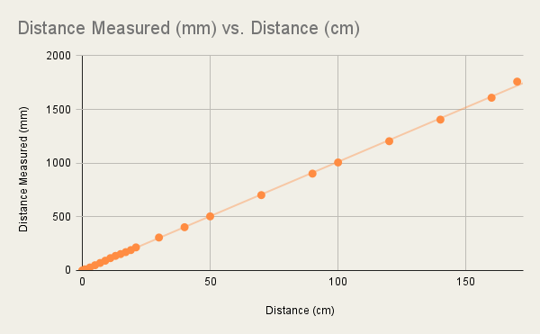

<div class="textcontainer">
<p class="margin"> </p>
<h3>Week 6: Electronic Inputs</h3>
<h4>Assignment 1: Capactive Sensor<h4>
<h4>Assignment 2: [Use + Calibrate Another Sensor]</h4>

<br>
<p class = "margin"></p>
I used the VL53L1X Tof distance sensor, which is a sensor that uses laser to calculate the distance between the object and the sensor itself.
<br>
<img src="./circuit-tof.png" alt="circuit" width="400">
<br>
<pre><code class="language-arduino">
#include < Wire.h >
#include < Adafruit_VL53L1X.h >
int SDApin = D1;
int SCLpin = D0;
Adafruit_VL53L1X vl53 = Adafruit_VL53L1X();
unsigned long previousMillis = 0;
const unsigned long interval = 200;
void setup() {
Serial.begin(9600);
delay(1000); // Give time for serial to start
Wire.begin(SDApin, SCLpin);
if (!vl53.begin(0x29, &Wire)) {
Serial.println("Sensor not found");
while (1);
}
Serial.println("VL53L1X sensor found!");
vl53.startRanging();
}
void loop() {
unsigned long currentMillis = millis();
if (currentMillis - previousMillis >= interval) {
previousMillis = currentMillis;
if (vl53.dataReady()) {
int distance = vl53.distance();
Serial.print("Distance: ");
Serial.print(distance);
Serial.println(" mm");
vl53.clearInterrupt();
}
}
}
</code></pre>
<br>
<div class="note-block">
<p><strong>Notes:</strong></p>
<ul>
<li>Connecting to 3.3v instead of 5v because the device runs at 3.3</li>
<li>SDA = data pin -> D1</li>
<li>SCL = clock -> D0</li>
</ul>
<p><strong>Code explanation:</strong></p>
<ul>
<li>For the code to be more effective and less complex I had to download the sensor’s library (Adafruit VL53L1X Library)</li>
<li>Then this is the first thing that I declared in the code</li>
<li>Next I created a ...</li>
<li>What the code is doing: measuring the distance between the sensor and an object every 200 milliseconds</li>
<li>Then I applied the <code>millis()</code> function by setting the interval to 200ms</li>
<li><code>Wire.begin()</code> just uses the pins connected to the sensor to specify where the data should come from</li>
<li><code>Serial.print()</code> is just printing down all the data collected</li>
</ul>
</div>

<br>

</div>
<p class = "margin"></p>
My goal was to make a simple touch sensor. For that I used two cooper pieces that were connected facing opposite directions.
<pre><code class="language-arduino">
const int sensorPin = D1;
int sensorValue;
int threshold = 2000;
unsigned long previousMillis = 0;
const unsigned long interval = 100; // Check every 100ms
void setup() {
Serial.begin(9600);
}
void loop() {
unsigned long currentMillis = millis();
if (currentMillis - previousMillis >= interval) {
previousMillis = currentMillis;
sensorValue = analogRead(sensorPin);
Serial.print("Analog value: ");
Serial.println(sensorValue);
}
}
</code></pre>